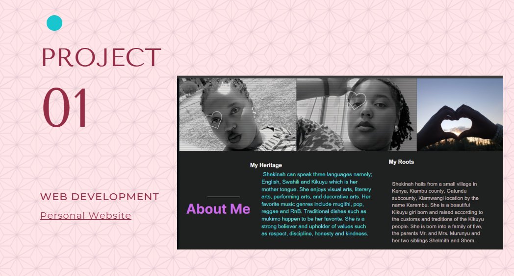
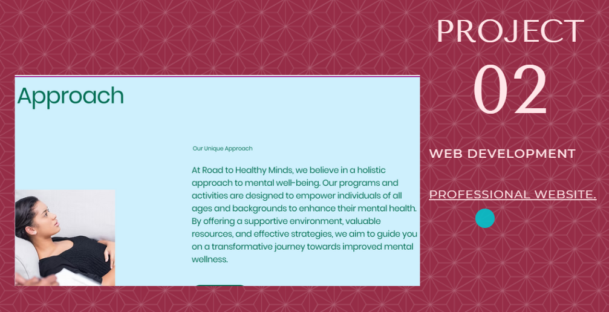
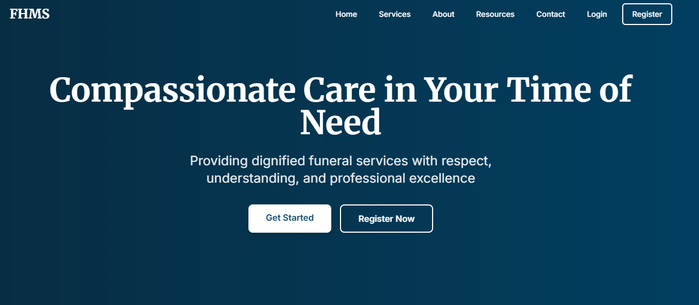

Projects



Funeral Home management system
This project is designed to manage funeral home operations, including scheduling services, managing client information, and tracking payments.
Contact
Email: murunyushekinah@gmail.com